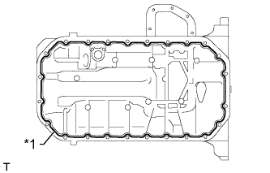
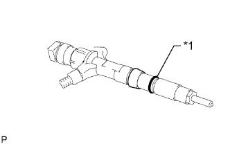
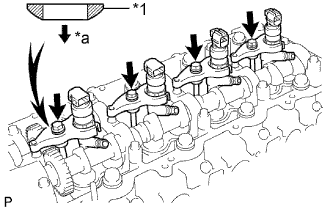
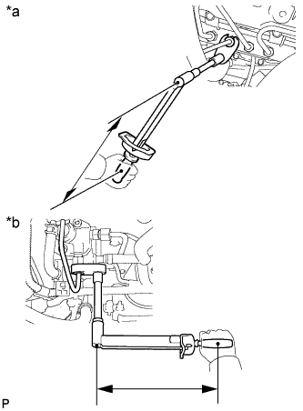
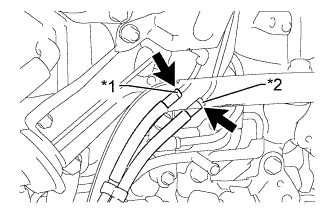

МАСЛЯНЫЙ НАСОС (для моделей без DPF) > УСТАНОВКА |
| 1. УСТАНОВИТЕ КАРТЕР ГАЗОРАСПРЕДЕЛИТЕЛЬНОГО МЕХАНИЗМА В СБОРЕ |
Удалите все остатки старого герметика (FIPG).
Нанесите герметик на картер газораспределительного механизма, как показано на рисунке.
| *1 | Новая прокладка |
| *2 | Герметик |
Установите новую прокладку в канавку картера газораспределительного механизма.
| *1 | Новая прокладка |
 |
Установите 2 новых кольцевых уплотнения на блок цилиндров.
| *1 | Новое кольцевое уплотнение |
Совместите метки "2" ведомой шестерни уравновешивающего вала № 1 и ведущей шестерни масляного насоса.
Совместите метку на ведущей шестерне масляного насоса с меткой на картере газораспределительного механизма.
Закрепите картер газораспределительного механизма с помощью пустотелого соединительного болта-штуцера и 8 болтов.
Снимите резьбовую заглушку и прокладку.
Залейте в масляный насос приблизительно 50 куб. см (3,05 куб. дюйма) моторного масла.
Установите новую прокладку и резьбовую заглушку.
| 2. УСТАНОВИТЕ ПОДДОН КАРТЕРА В СБОРЕ |
Удалите все остатки старого герметика (FIPG). Следите, чтобы масло не попало на сопряженные поверхности блока цилиндров, стопора заднего сальника коленчатого вала и масляного поддона.
Установите новую прокладку на блок цилиндров.
|  |
Нанесите герметик в виде сплошного валика, как показано на рисунке.
| *1 | Герметик |
Установите поддон картера и закрепите его 22 болтами и 2 гайками.
| 3. УСТАНОВИТЕ МАСЛОПРИЕМНИК С СЕТЧАТЫМ ФИЛЬТРОМ В СБОРЕ |
Установите новую прокладку и закрепите сетчатый фильтр 2 гайками.
| 4. УСТАНОВИТЕ ПОДДОН КАРТЕРА № 2 В СБОРЕ |
Удалите все остатки старого герметика (FIPG).
 |
Нанесите герметик на масляный поддон № 2, как показано на рисунке.
| *1 | Герметик |
Установите масляной поддон № 2 и закрепите его 13 болтами и 2 гайками.
| 5. УСТАНОВИТЕ ВЕДУЩЕЕ ЗУБЧАТОЕ КОЛЕСО КОЛЕНЧАТОГО ВАЛА |
 |
Установите ведущее зубчатое колесо коленчатого вала таким образом, чтобы установочная метка 1 была направлена вперед.
Совместите шпоночную канавку ведущего зубчатого колеса коленчатого вала с установочной шпонкой на коленчатом валу.
С помощью SST и молотка вбейте ведущее зубчатое колесо, чтобы установить его.
| 6. УСТАНОВИТЕ ШЕСТЕРНЮ НАСОСА ВЫСОКОГО ДАВЛЕНИЯ |
Закрепите новое кольцевое уплотнение и нагнетающий насос 2 гайками.
Временно закрепите шестерню насоса высокого давления гайкой.
 |
Совместите метки "3" ведомой шестерни уравновешивающего вала № 2 и шестерни насоса высокого давления.
 |
Установите новое кольцевое уплотнение на шестерню насоса высокого давления.
| *1 | Новое кольцевое уплотнение |
 |
Заверните установочную гайку шестерни насоса высокого давления.
Затяните гайку с помощью SST.
| 7. УСТАНОВИТЕ ВАЛ ПРОМЕЖУТОЧНОЙ ШЕСТЕРНИ № 1 |
 |
Нанесите слой моторного масла на вал промежуточной шестерни № 1.
| *1 | Моторное масло |
 |
Установите вал шестерни, как показано на рисунке.
| *1 | Смазочное отверстие |
| 8. УСТАНОВИТЕ ПРОМЕЖУТОЧНУЮ ШЕСТЕРНЮ № 1 |
 |
Совместите установочные метки "5" промежуточной шестерни и ведущего зубчатого колеса коленчатого вала.
| *1 | Поверните |
С помощью SST поверните шестерню насоса высокого давления и совместите установочные метки "4" промежуточной шестерни и шестерни насоса высокого давления, а затем введите шестерни в зацепление.
 |
Установите упорный диск выступом вперед.
| *1 | Технологический болт |
Совместите болтовые отверстия и закрепите упорный диск 2 болтами.
Выверните технологический болт.
| 9. УСТАНОВИТЕ ЗУБЧАТЫЙ ДИСК ДАТЧИКА ПОЛОЖЕНИЯ КОЛЕНЧАТОГО ВАЛА № 1 |
Совместите шпоночную канавку зубчатого диска датчика с установочной шпонкой.
Установите зубчатый диск датчика так, чтобы чашеобразная сторона была обращена наружу.
| 10. УСТАНОВИТЕ КРЫШКУ ГАЗОРАСПРЕДЕЛИТЕЛЬНОГО МЕХАНИЗМА |
Удалите все остатки старого герметика (FIPG).
Нанесите герметик на крышку газораспределительного механизма, как показано на рисунке.
| *1 | Герметик |
 |
Установите в картер газораспределительного механизма новое кольцевое уплотнение.
| *1 | Новое кольцевое уплотнение |
Закрепите крышку газораспределительного механизма 14 болтами 2 гайками.
| 11. УСТАНОВИТЕ НАСОС СИСТЕМЫ ОХЛАЖДЕНИЯ В СБОРЕ |
 |
Установите новую прокладку и закрепите насос системы охлаждения 5 болтами и 2 гайками.
| 12. УСТАНОВИТЕ КРЫШКУ РЕМНЯ ГАЗОРАСПРЕДЕЛЕНИЯ № 2 |
 |
Нанесите герметик (FIPG) на заданные участки, показанные на рисунке.
| *1 | Герметик |
Установите крышку ремня газораспределения № 2 и закрепите ее 4 болтами и гайкой.
| 13. УСТАНОВИТЕ ЗУБЧАТОЕ КОЛЕСО РАСПРЕДВАЛА |
Установите зубчатое колесо распредвала.
Вверните болт зубчатого колеса распредвала, удерживая распредвал ключом.
| 14. УСТАНОВИТЕ ФОРСУНКУ В СБОРЕ |
 |
Установите 4 новых седла форсунок в головку блока цилиндров.
Нанесите тонкий слой чистого моторного масла на 4 новых кольцевых уплотнения.
|  |
Установите кольцевое уплотнение на каждую форсунку, как показано на рисунке.
| *1 | Новое кольцевое уплотнение |
Установите 4 форсунки в головку блока цилиндров.
При замене форсунки новой деталью зарегистрируйте компенсационный код форсунки (Нажмите здесь).
|  |
Временно закрепите 4 новых шайбы и 4 фиксатора корпуса форсунок № 1 4 болтами.
| *1 | Шайба |
| *a | Вниз |
| *1 | Фиксатор корпуса форсунки |
Временно закрепите 4 топливных трубки высокого давления гайками штуцеров.
 |
Проверьте трубопровод обратного слива топлива. Убедитесь, что на уплотнительных поверхностях 5 штуцеров нет царапин и вмятин.
Если присутствуют царапины или вмятины, замените трубопровод обратного слива топлива.
 |
Установите на место трубку обратного слива и 5 новых прокладок.
| *1 | Пустотелый соединительный болт-штуцер |
| *2 | Полый винт |
Нанесите тонкий слой масла на 4 полых винта форсунок и пустотелый соединительный болт-штуцер.
Временно закрепите трубку обратного слива с помощью 4 полых винтов форсунок и пустотелого соединительного болта-штуцера.
Затяните 4 болта фиксаторов корпуса.
 |
Затяните 4 полых винта в порядке с 1 по 4.
| *1 | Пустотелый соединительный болт-штуцер |
Затяните пустотелый соединительный болт-штуцер.
Снимите 4 топливные трубки высокого давления.
| 15. ПРОВЕРЬТЕ, НЕТ ЛИ УТЕЧЕК ТОПЛИВА |
 |
Убедитесь в отсутствии утечек из соединения трубопровода обратного слива топлива.
Установите прокладку и трубопровод обратного слива топлива № 2 на головку блока цилиндров с помощью SST (обратный клапан).
Нанесите немного мыльного раствора (или другой жидкости для обнаружения утечек топлива) на соединение трубопровода обратного слива топлива.
 |
Установите SST (манометр для измерения давления наддува) со стороны возврата топлива трубки обратного слива и поддерживайте давление 100 кПа (1,0 кгс/см2, 15 фунтов на кв. дюйм) в течение 60 с, чтобы проверить, появляются ли пузырьки.
После проверки герметичности топливной системы вытрите мыльный раствор с соединения трубки обратного слива.
Снимите SST, трубопровод обратного слива топлива № 2 и прокладку.
| 16. УСТАНОВИТЕ КРЫШКУ ГОЛОВКИ БЛОКА ЦИЛИНДРОВ В СБОРЕ |
Удалите весь старый герметик (FIPG) с головки блока цилиндров.
 |
Нанесите герметик в местах, показанных на рисунке.
| *1 | Герметик |
Закрепите новую прокладку и крышку головки блока цилиндров 10 болтами и 2 гайками.
| 17. УСТАНОВИТЕ УПЛОТНИТЕЛЬНОЕ КОЛЬЦО ФОРСУНКИ В ГОЛОВКЕ БЛОКА ЦИЛИНДРОВ |
Установите 4 новых уплотнительных кольца форсунок в головке блока цилиндров.
| 18. УСТАНОВИТЕ КРЫШКУ МАСЛЯНОГО ПОДДОНА № 1 В СБОРЕ |
Закрепите крышку масляного поддона № 1 4 болтами.
| 19. УСТАНОВИТЕ ВАКУУМНУЮ ТРУБКУ № 1 В СБОРЕ |
Закрепите вакуумную трубку № 1 болтом и гайкой.
| 20. УСТАНОВИТЕ НАГНЕТАЮЩИЙ НАСОС В СБОРЕ |
 |
Убедитесь, что шестерня насоса высокого давления в картере газораспределительного механизма плавно перемещается назад и вперед.
Закрепите шкив приводного вала насоса и фланец зубчатого колеса распредвала № 2 4 болтами.
 |
Переместите шкив приводного вала насоса назад и вперед, чтобы проверить осевой зазор приводного вала насоса высокого давления.
| 21. УСТАНОВИТЕ ТРУБКУ ПОДВОДА ТОПЛИВА |
Установите трубку подвода топлива и временно закрепите ее гайками штуцеров.
|  |
С помощью разрезной головки на 17 мм затяните гайку штуцера трубки подвода топлива со стороны топливной системы Common Rail.
| *a | Со стороны топливной системы Common Rail |
| *b | Со стороны нагнетающего топливного насоса |
С помощью разрезной головки на 17 мм затяните гайку штуцера трубки подвода топлива со стороны нагнетающего топливного насоса.
| 22. УСТАНОВИТЕ ОПОРУ КОЛЛЕКТОРА С ЭЛЕКТРОВАКУУМНЫМ КЛАПАНОМ |
 |
Закрепите опору коллектора с электровакуумным клапаном 2 болтами и подсоедините вакуумные шланги № 3 и № 4.
| *A | Для моделей без системы РОГ |
| *B | Для моделей с системой РОГ |
| *1 | Метка, нанесенная белой краской |
| *2 | Синяя метка |
Для моделей с охладителем РОГ:
Подсоедините вакуумный шланг № 3.
|  |
Для моделей с системой РОГ:
Подсоедините вакуумные шланги № 2 и № 3.
| *1 | Желтая метка |
| *2 | Розовая метка |
Подсоедините вакуумный шланг № 1.
Подсоедините разъем электровакуумного клапана.
Для моделей без системы РОГ:
Подсоедините разъем.
Для моделей с системой РОГ без охладителя РОГ:
Подсоедините 2 разъема.
Для моделей с системой РОГ с охладителем РОГ:
Подсоедините 3 разъема.
| 23. УСТАНОВИТЕ ПАТРУБОК ПОДАЧИ ВОЗДУХА С КОРПУСОМ ДРОССЕЛЬНОЙ ЗАСЛОНКИ ДИЗЕЛЬНОГО ДВИГАТЕЛЯ В СБОРЕ (для моделей без системы РОГ) |
 |
Установите новую прокладку на впускной коллектор.
 |
Установите патрубок подачи воздуха с корпусом дроссельной заслонки дизельного двигателя в сборе и закрепите 3 болтами.
Подсоедините разъем датчика положения дроссельной заслонки.
| 24. УСТАНОВИТЕ ОПОРУ ПАТРУБКА ПОДАЧИ ВОЗДУХА (для моделей без системы РОГ) |
 |
Предварительно установите опору патрубка подачи воздуха, закрепив ее 3 болтами.
Затяните болт, обозначенный А.
Затяните 2 болта В.
| 25. УСТАНОВИТЕ ТОПЛИВНУЮ ТРУБКУ ВЫСОКОГО ДАВЛЕНИЯ (для моделей без системы РОГ) |
 |
Временно закрепите топливные трубки высокого давления № 1, № 2 и № 3 гайками штуцеров.
| *1 | Топливная трубка высокого давления № 2 |
Закрепите зажимы топливных трубок высокого давления № 2 и № 3 2 болтами и 2 гайками, как показано на рисунке.
 |
С помощью разрезной головки на 17 мм затяните гайки штуцеров топливной трубки высокого давления со стороны топливной системы Common Rail.
| *a | Со стороны топливной системы Common Rail |
| *b | Со стороны форсунки |
С помощью разрезной головки на 17 мм затяните гайки штуцеров топливной трубки высокого давления со стороны форсунки.
| 26. УСТАНОВИТЕ КРОНШТЕЙН КОРПУСА ДРОССЕЛЬНОЙ ЗАСЛОНКИ (для моделей без системы РОГ) |
Установите корпус дроссельной заслонки и закрепите его 2 болтами.
Установите газовый фильтр с кронштейном газового фильтра и закрепите болтом.
Подсоедините вакуумный шланг.
| 27. УСТАНОВИТЕ ЭЛЕКТРИЧЕСКИЙ КЛАПАН УПРАВЛЕНИЯ РОГ В СБОРЕ (для моделей с системой РОГ) |
Установите электрический клапан управления РОГ (Нажмите здесь).
| 28. УСТАНОВИТЕ ШКИВ КОЛЕНЧАТОГО ВАЛА |
Совместите шпоночную канавку шкива со шпонкой коленчатого вала, а затем задвиньте шкив на место.
 |
С помощью SST затяните болт шкива.
| 29. УСТАНОВИТЕ ОПОРНЫЙ РОЛИК ПРИВОДНОГО РЕМНЯ ГАЗОРАСПРЕДЕЛЕНИЯ № 1 В СБОРЕ |
С помощью шестигранного гаечного ключа на 10 мм закрепите новую шайбу и опорный ролик приводного ремня газораспределения № 1 болтом.
Проверьте, плавно ли двигается опорный шкив.
Если опорный ролик не перемещается плавно, проверьте установку опорного ролика и шайбы.
| 30. УСТАНОВИТЕ ПРИВОДНОЙ РЕМЕНЬ ГАЗОРАСПРЕДЕЛЕНИЯ |
Установите приводной ремень газораспределения (Нажмите здесь).
| 31. УСТАНОВИТЕ ДАТЧИК ПОЛОЖЕНИЯ КОЛЕНЧАТОГО ВАЛА |
Присоедините зажим и закрепите датчик положения коленчатого вала болтом.
| 32. УСТАНОВИТЕ ДАТЧИК ПОЛОЖЕНИЯ РАСПРЕДВАЛА |
Установите датчик положения распредвала и закрепите его болтом.
| 33. УСТАНОВИТЕ ЛОПАСТНОЙ НАСОС В СБОРЕ |
Закрепите новое кольцевое уплотнение и лопастной насос 2 гайками.
| 34. УСТАНОВИТЕ ВАКУУМНЫЙ НАСОС В СБОРЕ |
Установите 2 новых кольцевых уплотнения на вакуумный насос.
Закрепите вакуумный насос 2 гайками.
| 35. УСТАНОВИТЕ ИЗОЛЯТОР КРЫШКИ ГАЗОРАСПРЕДЕЛИТЕЛЬНОГО МЕХАНИЗМА |
Закрепите изолятор крышки газораспределительного механизма болтом.
| 36. УСТАНОВИТЕ КРЫШКУ ГОЛОВКИ БЛОКА ЦИЛИНДРОВ № 2 В СБОРЕ |
 |
Закрепите крышку головки блока цилиндров № 2 4 болтами.
| 37. УСТАНОВИТЕ ТРУБКУ ЩУПА ПРОВЕРКИ УРОВНЯ МАСЛА |
Установите новое кольцевое уплотнение на направляющую щупа проверки уровня моторного масла.
Нанесите тонкий слой чистого моторного масла на кольцевое уплотнение.
Закрепите трубку щупа проверки уровня моторного масла 2 болтами.
Установите щуп проверки уровня моторного масла.
| 38. УСТАНОВИТЕ ТРУБКУ ВЕНТИЛЯЦИИ КАРТЕРА |
Подсоедините 2 шланга вентиляции картера и закрепите трубку вентиляции картера болтом на крышке головки блока цилиндров.
| 39. УСТАНОВИТЕ КРОНШТЕЙН КОМПРЕССОРА № 1 |
Закрепите кронштейн крепления компрессора № 1 5 болтами.
| 40. УСТАНОВИТЕ КРОНШТЕЙН ГЕНЕРАТОРА |
Закрепите кронштейн генератора болтами.
| 41. УСТАНОВИТЕ ГЕНЕРАТОР В СБОРЕ |
 |
Установите генератор и закрепите его 2 болтами.
| 42. СНИМИТЕ ДВИГАТЕЛЬ СО СТЕНДА |
| 43. УСТАНОВИТЕ ДВИГАТЕЛЬ В СБОРЕ |
Установите двигатель (Нажмите здесь).
| 44. ЗАЛЕЙТЕ МОТОРНОЕ МАСЛО |
Залейте новое моторное масло.
| Параметр / Устройство | Класс масла | Вязкость масла (SAE) |
| Для моделей с DPF | ACEA C2 (использование моторного масла, отличного от ACEA C2, может привести к повреждению каталитического нейтрализатора) | - 0W-30 - 5W-30 (0W-30 – наилучшее масло с точки зрения экономии топлива и облегчения запуска двигателя в холодную погоду) |
| Для моделей без DPF | G-DLD1, API CF-4, CF или ACEA B1 (также можно использовать API CE или CD) | - 5W-30 - 10W-30 - 15W-40 - 20W-50 |
| Параметр / Устройство | Заданные условия |
| Слив и заполнение без замены масляного фильтра | 6,7 л (7,1 кварты США, 5,9 английской кварты) |
| Слив и заполнение с заменой масляного фильтра | 7,0 л (7,4 кварты США, 6,2 английской кварты) |
| Заполнение сухой системы | 7,5 л (7,9 кварты США, 6,6 английской кварты) |
Установите крышку маслоналивной горловины.
| 45. ПОДСОЕДИНИТЕ ПРОВОД К ОТРИЦАТЕЛЬНОМУ ВЫВОДУ АККУМУЛЯТОРНОЙ БАТАРЕИ |
| 46. УДАЛИТЕ ВОЗДУХ ИЗ ТОПЛИВНОЙ СИСТЕМЫ |
 |
С помощью ручного насоса, установленного на крышке топливного фильтра, удалите воздух из топливной системы. Продолжайте прокачку, пока сопротивление насоса при работе не возрастет.
Запустите двигатель.
Если двигатель запускается, перейдите к следующему шагу.
Если запуск двигателя невозможен, прокачайте систему снова с помощью ручного насоса до повышения сопротивления насоса (см. процедуры выше). Затем запустите двигатель.
Выключите зажигание.
Подсоедините портативный диагностический прибор к DLC3.
Включите зажигание (IG) и портативный диагностический прибор.
Сбросьте коды DTC (Нажмите здесь).
Запустите двигатель.*1
 |
Войдите в следующие меню: Powertrain / Engine and ECT / Active Test / Test the Fuel Leak.*2
| *a | Для справки Испытание в режиме Active Test |
Выполните следующее испытание 5 раз с интервалами включения/выключения 10 с: Active Test / Test the Fuel Leak.*3
После 5-го испытания в режиме Active Test дайте двигателю поработать на холостом ходу в течение не менее 3 мин.
Войдите в следующие меню: Powertrain / Engine and ECT / DTC.
Считайте текущие коды DTC.
Сбросьте коды DTC (Нажмите здесь).
Повторите операции с *1 по *3.
Войдите в следующие меню: Powertrain / Engine and ECT / DTC.
Считайте текущие коды DTC.
| 47. ДОБАВЬТЕ ОХЛАЖДАЮЩУЮ ЖИДКОСТЬ ДВИГАТЕЛЯ |
Затяните пробку сливного крана радиатора вручную.
Затяните пробку сливного крана блока цилиндров.
Заполните радиатор охлаждающей жидкостью с увеличенным сроком замены "Super Long Life Coolant (SLLC)" от компании Тойота, залив ее в трубопровод B расширительного бачка.
| Параметр / Устройство | Заданные условия | |
| для моделей с автоматической трансмиссией | Для моделей с задним подогревателем | 14,9 литра (15,7 кварты США, 13,1 английской кварты) |
| Для моделей без заднего подогревателя | 13,1 литра (13,8 кварты США, 11,5 английской кварты) | |
| для моделей с механической трансмиссией | Для моделей с задним подогревателем | 15,0 литра (15,8 кварты США, 13,2 английской кварты) |
| Для моделей без заднего подогревателя | 13,2 литра (13,9 кварты США, 11,6 английской кварты) | |
Несколько раз сожмите рукой входной и выходной патрубки радиатора, затем проверьте уровень охлаждающей жидкости.
Если уровень охлаждающей жидкости опускается ниже линии В, долейте охлаждающую жидкость SLLC Toyota до линии В.
Установите пробку расширительного бачка радиатора.
Установите вентиляционную пробку с помощью гаечного ключа.
Выпустите воздух из системы охлаждения.
Прогревайте двигатель, пока не откроется термостат. Когда термостат откроется, несколько минут прокачивайте охлаждающую жидкость.
Поддерживайте частоту вращения коленчатого вала двигателя на уровне 2500–3000 об/мин.
Несколько раз сожмите рукой входной и выходной патрубки радиатора, чтобы удалить воздух.
Остановите двигатель и подождите, пока охлаждающая жидкость остынет до температуры окружающего воздуха.
Когда охлаждающая жидкость остынет, убедитесь, что она находится на уровне отметки FULL.
Если уровень охлаждающей жидкости ниже отметки FULL, долейте SLLC от компании Тойота до этой отметки.
| 48. ПРОВЕРЬТЕ, НЕТ ЛИ УТЕЧЕК МАСЛА |
Запустите двигатель. Убедитесь, что в узлах, в которых выполнялись работы, нет утечек масла.
| 49. ПРОВЕРЬТЕ, НЕТ ЛИ УТЕЧЕК ТОПЛИВА |
Убедитесь, что когда двигатель остановлен, нет утечки из какой-либо части топливной системы. При обнаружении утечки топлива отремонтируйте или замените детали, если это необходимо.
Запустите двигатель и убедитесь, что в топливной системе нет утечек. При обнаружении утечки топлива отремонтируйте или замените детали, если это необходимо.
Отсоедините возвратный шланг от топливной системы Common Rail.
Запустите двигатель и проверьте возвратный трубопровод на наличие утечек топлива.
В случае наличия утечек топлива замените топливную систему Common Rail.
Подсоедините портативный диагностический прибор к DLC3.
Запустите двигатель и включите портативный диагностический прибор.
В режиме Active Test портативного диагностического прибора выберите Fuel Leak Test.
Если портативный диагностический прибор недоступен, быстро до упора нажмите педаль акселератора. Увеличьте частоту вращения коленчатого вала двигателя до максимума и поддерживайте ее в течение 2 с. Повторите эту операцию несколько раз.
Убедитесь в отсутствии утечек топлива из топливной системы.
Подсоедините возвратный шланг к топливной системе Common Rail.
| 50. ПРОВЕРЬТЕ, НЕТ ЛИ УТЕЧЕК ОТРАБОТАВШИХ ГАЗОВ |
| 51. ПРОВЕРЬТЕ ЧАСТОТУ ВРАЩЕНИЯ КОЛЕНЧАТОГО ВАЛА ДВИГАТЕЛЯ НА ХОЛОСТОМ ХОДУ |
Подсоедините портативный диагностический прибор к DLC3.
 |
Если портативный диагностический прибор отсутствует, подсоедините щуп тахометра к контакту 9 (TAC) DLC3 с помощью SST.
| *a | Вид спереди разъема DLC3 |
Проверьте частоту вращения коленчатого вала двигателя на холостом ходу.
Запустите двигатель и проверьте частоту вращения холостого хода.
| Параметр / Устройство | Заданные условия | |
| для моделей с автоматической трансмиссией | 650–750 об/мин | |
| для моделей с механической трансмиссией | Для моделей с DPF | 650–750 об/мин |
| Для моделей без DPF | 610-710 об/мин | |
Проверьте максимальную частоту.
Запустите двигатель.
До упора нажмите педаль акселератора.
Измерьте максимальную частоту.
| Параметр / Устройство | Заданные условия |
| Для моделей с DPF | 4500 - 4700 об/мин |
| Для моделей без DPF | 4450 - 4750 об/мин |
Если щуп тахометра подключен к DLC3, отсоедините его вместе с SST от контакта 9 разъема DLC3.
Отсоедините портативный диагностический прибор от DLC3.
| 52. ПРОВЕРЬТЕ УРОВЕНЬ МОТОРНОГО МАСЛА |
Прогрейте двигатель, затем остановите его и подождите 5 минут. Уровень моторного масла должен находиться между отметками низкого и максимального уровней на щупе проверки уровня масла.
Если уровень низкий, проверьте, нет ли утечек, и долейте масло до максимальной отметки.
| 53. УСТАНОВИТЕ ЗАЩИТУ КАРТЕРА ДВИГАТЕЛЯ № 1 В СБОРЕ |
Установите защиту картера двигателя № 1 и закрепите ее 4 болтами.
| 54. УСТАНОВИТЕ НИЖНЮЮ ОБЛИЦОВКУ ПЕРЕДНЕГО БАМПЕРА |
Установите нижнюю накладку переднего бампера и закрепите ее фиксатором и 5 болтами.